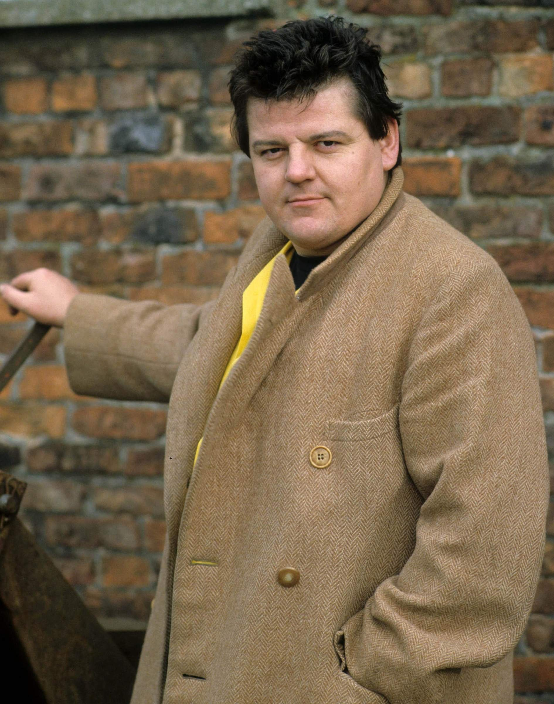

БиографияДетство и юношествоРобби Колтрейн родился 30 марта 1950 года, в Рутерглене, Шотландия, Великобритания. Мать — Джин Макмиллан-Росс (урождённая Хауи), педагог и пианистка, отец — Иэн Бакстер Макмиллан, практикующий семейный врач и судебный хирург. У него остались старшая сестра Энни и младшая сестра Джейн. Колтрейн приходился правнуком шотландскому предпринимателю Томасу У. Хауи. Робби Колтрейн получил образование в престижном колледже Гленалмонд в графстве Перт, из которого его едва не исключили из-за нарушения дисциплины. После Гленалмонда молодой человек поступил в Школу искусств Глазго, а затем в педагогический колледж «Дом Морей» в Эдинбурге. Участвовал во множественных акциях: международной амнистии, «Гринпис», лейбористской партии и кампании за ядерное разоружение.  КарьераПервое его появление на экране произошло на канале ВВС в 1981 г. в комедийном телесериале «A Kick Up the Eighties». После он также играл в комедийных скетчах и шоу: «The Comic Strip Presents» (1982), «Alfresco» (1983—1984) и т. д.С начала 2000-х годов играл роль полувеликана Хагрида в фильмах о Гарри Поттере (2001—2011 годы). текста
СмертьКолтрейн умер 14 октября 2022 года на 73-м году жизни в шотландской больнице Форт Вэлли Ройал города Ларберт в округе Фолкерк. Смерть актёра была подтверждена его бывшей супругой и агентом. Причиной смерти стала полиорганная недостаточность, осложнённая сепсисом, инфекцией нижних дыхательных путей и блокадой сердца. Также известно, что актёр страдал ожирением и диабетом 2-го типа.
|